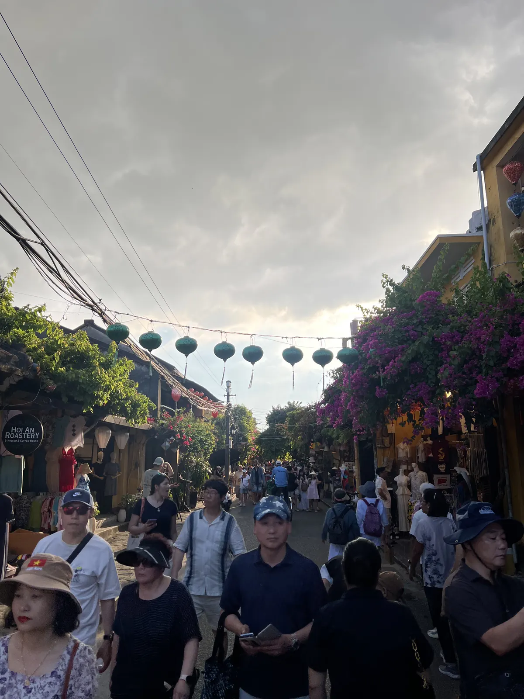
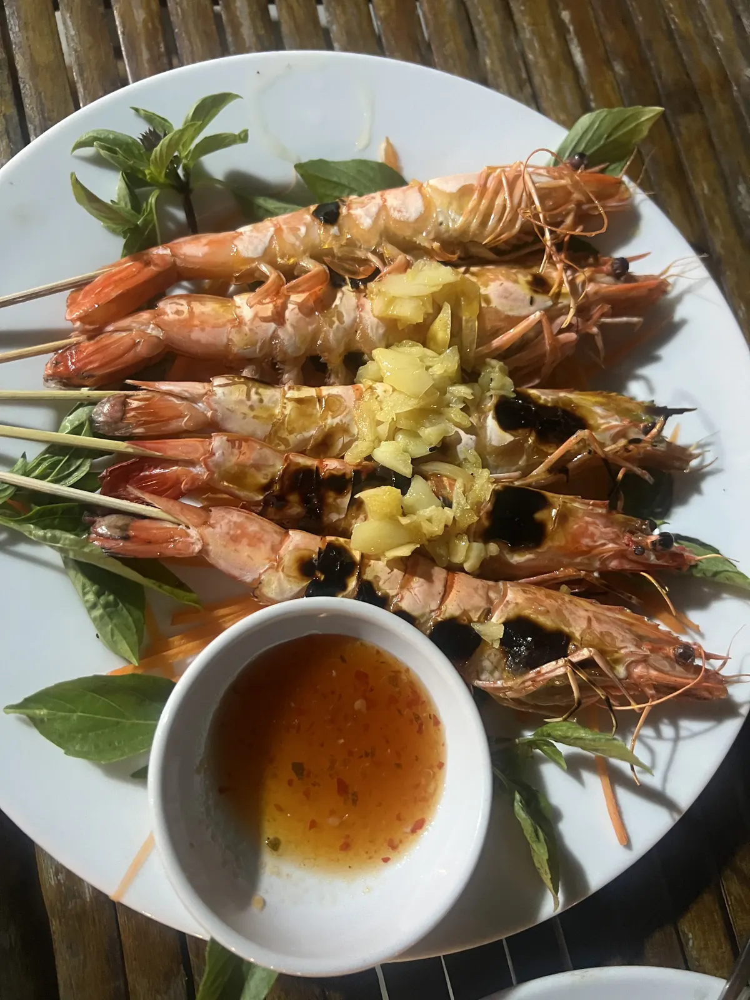
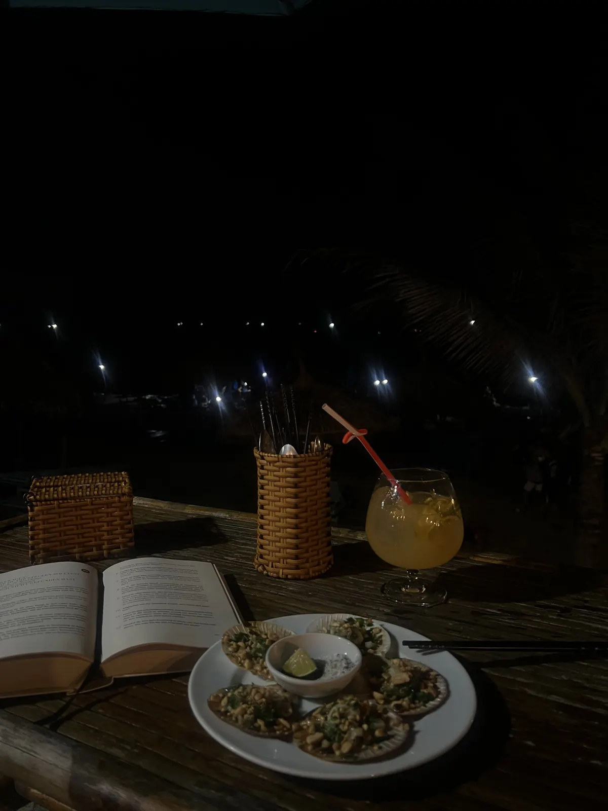
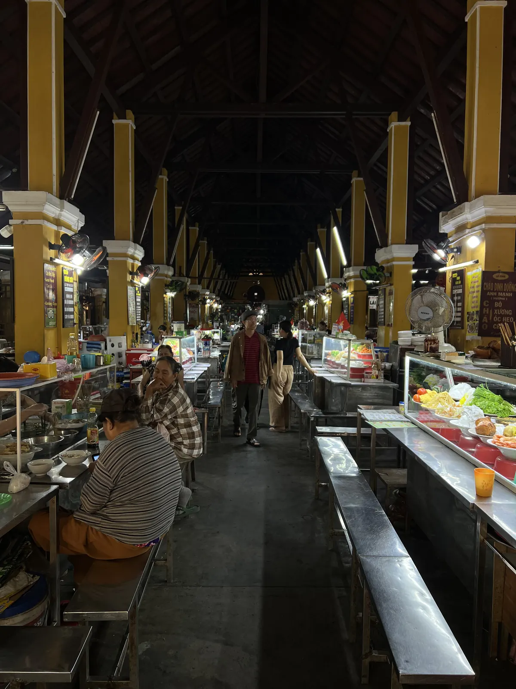
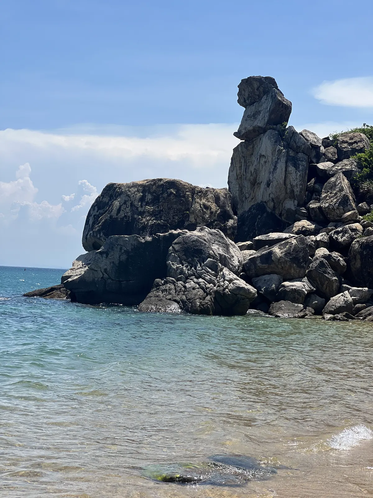
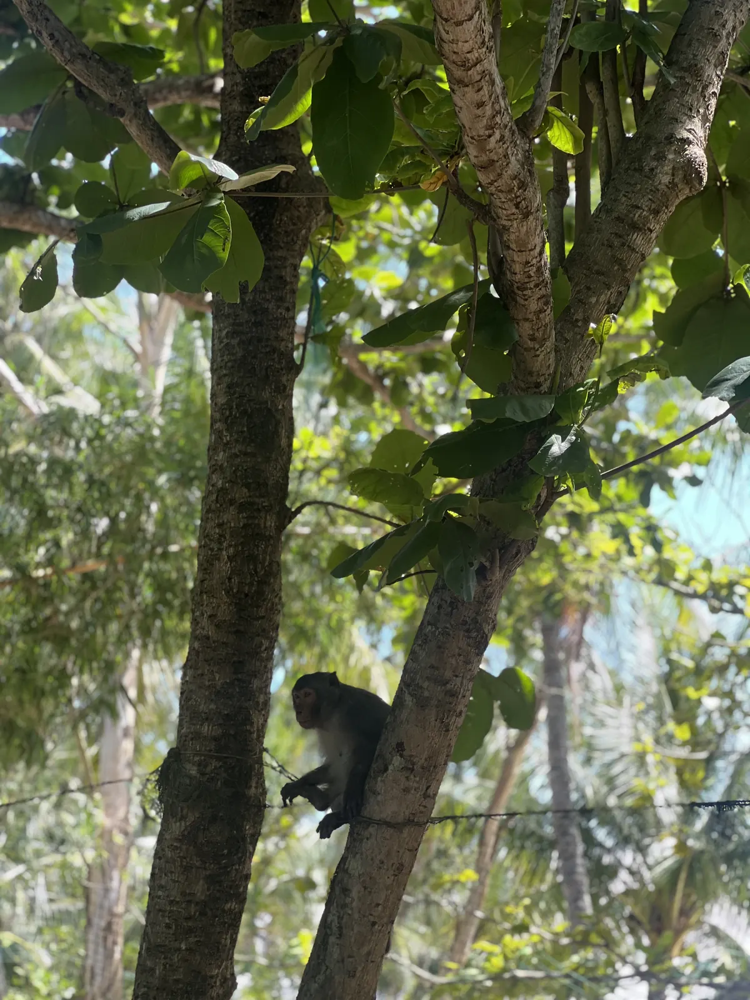

🇻🇳 Hoi An Guide: 12 places – lanterns, cao lầu, My Son & hidden gems

Table of contents
Once a month at full moon the lights go out in Hoi An’s old town – and thousands of lanterns go on. Prices and times are guidelines (2026).
🗺️ Map: all 9 places
My story in Hoi An
I was there in February 2026, and that is exactly what the trip is worth it for. Between Hanoi and Saigon, Hoi An was my middle stop. At full moon thousands of lanterns glow in the car-free old town – for me the reason the whole trip was worth it.
This guide contains affiliate links (GetYourGuide, Omio). If you book through them I earn a small commission – you never pay a cent more. Prices and opening hours change – double-check before you go.
🆓 Free things to do
3 places in Hoi An you can enjoy without an entry fee or completely free (for some, only a part costs extra, e.g. a tower or museum):
At a glance
Getting there and around
The nearest airport is Da Nang; from there you go by taxi, bus or transfer to Hoi An (check duration beforehand). The old town is car-free.
Hoi An has no airport of its own; you fly to Da Nang and drive in about 45 to 60 minutes by taxi, Grab or transfer (check prices beforehand). The old town is easy to explore on foot or by bike; in the evening the lanes are closed to cars.
Cash in dong is practical; ATMs are available in the town. The rainy season is roughly between September and December – then plan a rain jacket and breaks.
1. Must-sees
Lanterns at full moon💎 Hidden gem🆓 Free to experience
Plan your visit around the 14th day of the lunar month. Float a candle in a paper lantern on the river in the evening.
Every month, on the 14th day of the lunar calendar, Hoi An celebrates the lantern festival: the old town becomes car-free, electric lights go out, and thousands of silk lanterns glow in the lanes. On the Thu Bồn River small boats and paper lanterns drift. It is the moment when the city is most enchanting.
Plan the visit around the full-moon nights (check dates beforehand) and come early to find a place by the river. You can buy a lantern and set it on the water with a wish – it is kitschy but very beautiful. Prices for boats and lanterns change; ask beforehand.
Tip: Come early on the full-moon evening and find a spot by the river.
Japanese Covered Bridge
Recalls the merchants from around the world. Busy by day.
The Japanese Bridge is a covered wooden bridge from the late 16th or early 17th century that was meant to connect Hoi An’s Japanese and Chinese merchant communities. On the bridge stands a small temple. It is part of the old-town ticket (check details beforehand).
By day it is crowded; come early in the morning or in the evening when the lanterns glow. A photo from the side shows it best.
Tip: Come before 8 a.m. or after sunset.
Bánh mì Phượng
Cao Lầu
Old-town lanes, assembly halls & Tan Ky House🆓 Free to experience
Hoi An’s old town has been on the UNESCO World Heritage list since 1999: yellow-painted wooden houses, silk lanterns and narrow lanes. The assembly halls of the Chinese communities (for example the Fujian and Cantonese halls) are richly decorated with dragons, incense coils and altars. The Tân Ký House shows how merchant families lived.
For entry to several sights you need an old-town ticket (check price and rules beforehand). The walk is most beautiful early in the morning when the lanes are still empty.
Tip: Set off at 6–7 a.m., then the lanes are empty and golden.
Tailors in Hoi An
Hoi An is known for its tailor shops: you can have shirts, dresses, suits or coats made to measure, often within 24 to 48 hours. Bring a photo or choose a fabric; the tailors measure, sew and adjust.
Compare prices and quality in several shops, ask about fabrics and fittings, and haggle in a friendly way. Allow enough time for two to three fittings.
Tip: Plan it on the first day and ask for at least two fittings.
An Bang Beach🆓 Free to experience
About five kilometres from the old town lies An Bang Beach with fine sand, beach bars and restaurants. You can cycle or ride a scooter there, rent loungers and enjoy the sea. In the evening there are sunset and seafood.
In summer it is hot; watch for currents and red flags. Prices for loungers and drinks change; ask beforehand.
Tip: Cycle there and stay for sunset.


White rose, mì Quảng & more: eating in Hoi An
Besides cao lầu and bánh mì the cuisine of Hoi An is rich: “White Rose” (bánh bao bánh vạc) are delicate shrimp dumplings, mì Quảng is a noodle speciality with pork and peanuts, and chicken rice (cơm gà) is a classic. Try freshly pressed sugarcane juice with it.
Small eateries are cheap and delicious. Look at the street stalls where locals sit and ask the price.
Tip: Eat where locals sit – and ask the price.

2. Hidden gems around Hoi An
Trà Quế – vegetable village & cooking class💎 Hidden gem
About three kilometres north of the old town lies Trà Quế, a village known for its herb and vegetable gardens. You can cycle through the beds, work with farmers and learn how ingredients are grown. Many cooking classes begin here with a visit to the field.
A cooking class usually takes half a day and includes a market or village visit and the shared meal (check prices beforehand). A good chance to understand Vietnam’s cuisine.
Tip: Book a cooking class with a village visit in the morning.
Cẩm Thanh – coconut forest & basket boats💎 Hidden gem
In the Cẩm Thanh coconut forest round basket boats glide through narrow waterways between nipa palms. A boatman paddles you through the channels; some show small tricks. It is touristy but a lovely nature experience near the city.
The ride takes about 30 to 60 minutes. Agree the price beforehand and come in the morning when it is cooler.
Tip: Come in the morning and agree the price beforehand.
My Son – Cham temples💎 Hidden gem
About 40 kilometres west of Hoi An lies My Son, a temple complex of the Cham from the 4th to 14th century and a UNESCO World Heritage site. The brick towers in the jungle are partly ruined, partly restored; bombs from the war have left damage. A trip takes half a day.
Early in the morning it is cooler and emptier. Take water, sun protection and sturdy shoes. Check prices and opening times beforehand.
Tip: Start early in the morning before the buses arrive.
Cù Lao Chàm (Cham Islands)💎 Hidden gem
The island group lies about 15 kilometres off the coast and is part of the UNESCO Cù Lao Chàm – Hội An Biosphere Reserve. A speedboat from Cửa Đại gets you there in about 20 to 30 minutes: clear water for snorkelling, rocks in the sea, a small fishing village and monkeys in the trees.
Most people visit on a day tour with snorkelling and lunch. In the rainy season (roughly October to February) boats are often cancelled when the sea is rough.
Tip: Go in the morning – the sea is calmest and the water clearest.


What makes Hoi An special
From the 15th to 19th century Hoi An was one of Southeast Asia’s most important trading ports. Then the river silted up, trade moved on and the city stayed as if frozen – which saved it. Nowhere in Vietnam can you get a suit tailored as quickly.
📍 Save this guide to Google Maps
1. Quick: open as a route
2. Permanent: as your own map (2 minutes)
- Download the file with all pins (KML button below).
- Open Google My Maps → “Create a new map” → “Import” → choose the file.
- Done – every place sits exactly where it should, with number, tip and a link back to the guide.
- In the Google Maps app the map appears under “Saved” → “Maps”, also on the go.
⬇️ All pins for Google Maps (KML) ⬇️ Download place list (CSV)
3. Save one by one
Your plan
Day 1: A day in Hoi An
- Early (6 a.m.) – old-town lanes and Japanese Bridge
- Morning – cao lầu, bánh mì Phượng, assembly halls
- Afternoon – An Bang Beach or tailor visit
- Evening – lanterns, night market, paper lanterns on the river
FAQ
When is the full-moon lantern festival?
Around the 14th day of the lunar month – check the date beforehand.
How many days do you need in Hoi An?
Do I need an old-town ticket?
🗺️ All places on my map → More guides and reels on Instagram: @hiddengem.atlas
Share this guide: On WhatsApp